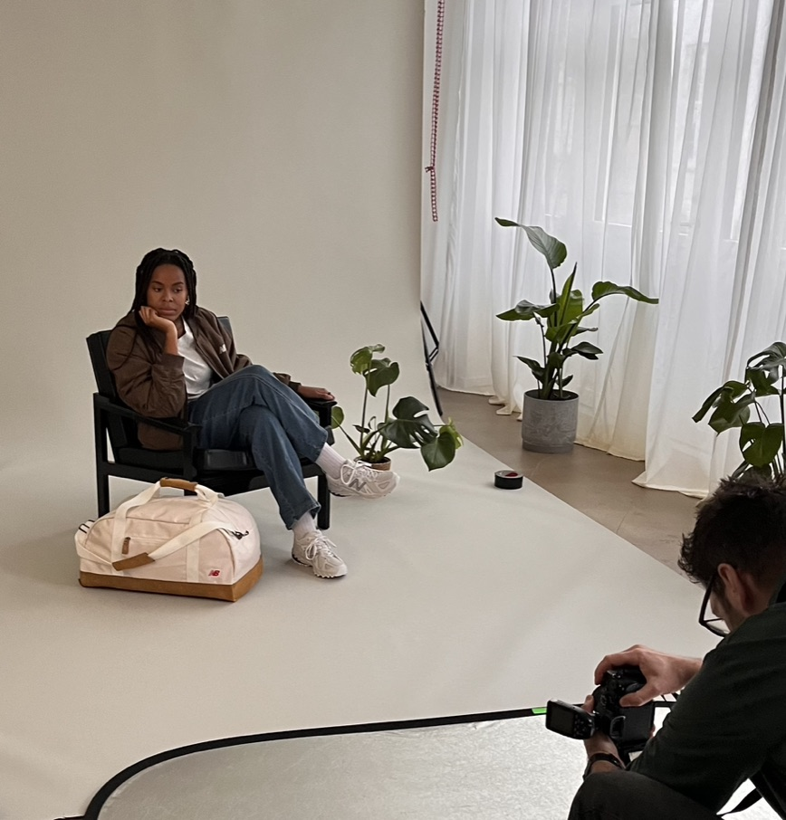
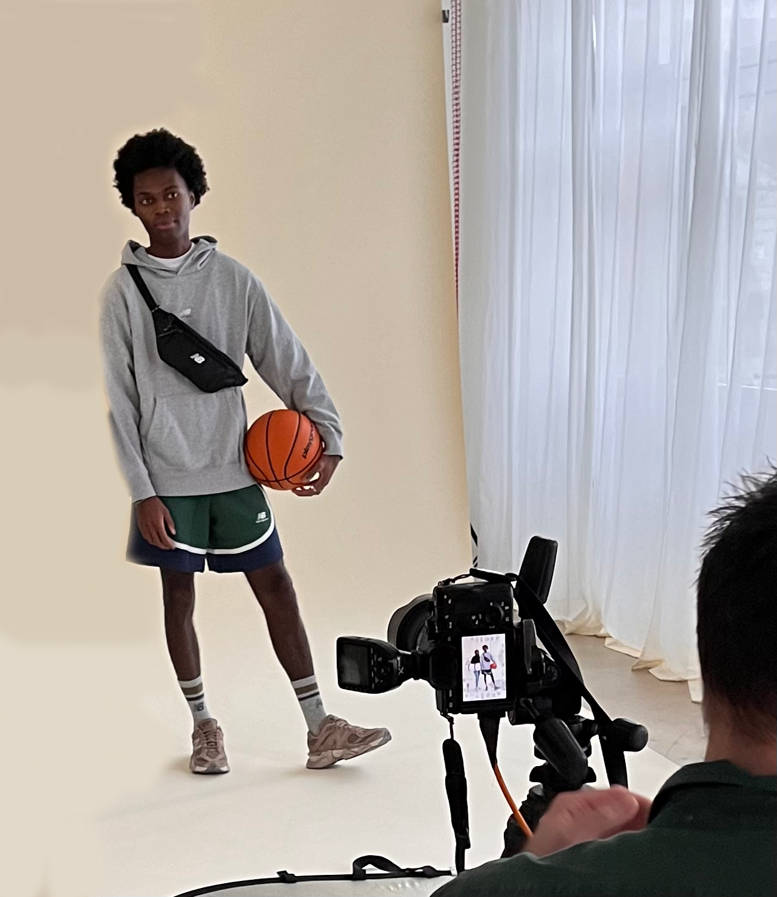

MØD OS!
Her hos ZeroBuzz Brew er vi et ungt team på 15 medarbejder, der hver dag arbejder på at udlevere alkoholfri øl med topkvalitet og lækker smag til jer! Vi deler en fælles passion, om at skabe et univers her hos ZeroBuzz Brew, der både er indbydende, behageligt og samtidigt fristende, som alle kan tage del i.
Vores team består af erfarne bryggere, kreative smagsudviklere og entusiastiske salgs- og markedsføringsfolk, som alle arbejder sammen om at opfylde vores mission: at bryde stigmatiseringen omkring alkohol og tilbyde et alternativ, der er lige så lækkert og fornøjeligt som traditionel øl, men uden alkoholens indflydelse.
Vi er dedikerede til at fortsætte vores indsats for at forfine vores bryggeproces, eksperimentere med nye smagsvarianter og forblive på forkant med udviklingen inden for alkoholfri øl. Vores mål er at sætte standarden for kvalitet og smag inden for denne voksende branche og fortsætte med at glæde vores kunder med hver slurk.
Her hos ZeroBuzz Brew, elsker vi at inddrage vores kunder i processen, da vi designer for jer til jer. Vær ikke bleg for at efterlade inputs!
EMMA

Hej! Jeg hedder Emma og jeg er grafisk designer her hos ZeroBuzzBrew
Hej! Jeg hedder Emma og jeg er grafisk designer her hos ZeroBuzzBrew
Når jeg ikke designer, nyder jeg at dykke ned i nye trends og teknikker inden for grafisk design, og jeg finder altid inspiration i de små detaljer i hverdagen. Det er fantastisk at være en del af et innovativt brand som ZeroBuzzBrew, hvor jeg kan bidrage til at skabe noget, som vores kunder elsker.
KASPER

Hej! Jeg hedder Emma og jeg er grafisk designer her hos ZeroBuzzBrew
Hej! Jeg hedder Emma og jeg er grafisk designer her hos ZeroBuzzBrew
Hej! Jeg hedder Emma og jeg er grafisk designer her hos ZeroBuzzBrew
Hej! Jeg hedder Emma og jeg er grafisk designer her hos ZeroBuzzBrew
Hej! Jeg hedder Emma og jeg er grafisk designer her hos ZeroBuzzBrew